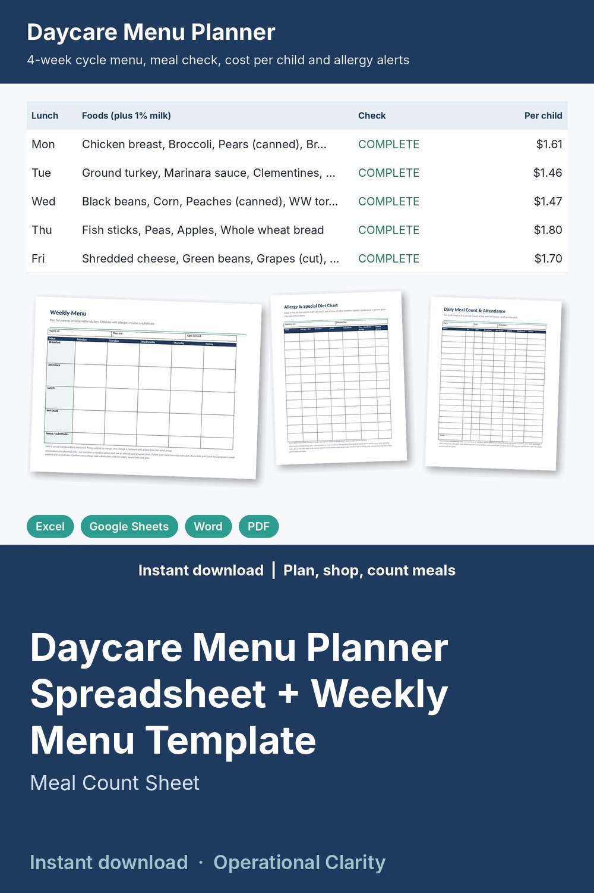

Daycare Menu Planner Spreadsheet + Weekly Menu Template

Plan a 4-week daycare menu once, see that every meal is complete, know your food cost per child, catch allergies before they hit the plate, and print the weekly menu for parents.
WHAT'S INSIDE
- Daycare Menu Planner & Meal Count (Excel / Google Sheets, 10 tabs):
* Food library: each food with its group (milk, fruit, vegetable, grain, protein), price, child servings per unit and allergens; cost per serving calculates
* 4-week cycle menu: pick up to 5 foods per meal from drop-downs for breakfast, AM snack, lunch and PM snack. Each meal shows its food groups, a COMPLETE / MISSING check against your meal rules, cost per child and the allergens in it
* Children & allergies: allergies, diet needs and substitution plan for each child; meals that need a substitute are flagged
* Weekly menu: pick a cycle week for a clean Monday to Friday menu to print or post
* Shopping list: pick a week and number of children; servings needed, what you have and what to buy with an estimated total
* Meal count: children in attendance and meals served each day; planned food cost comes from the menu automatically
* Grocery receipts + Dashboard: cost per child per day vs your budget, grocery spend vs plan, cost per meal, meals served by meal
- Printable forms (Word + PDF, 8 pages): Weekly Menu, Monthly Menu Calendar, Weekly Menu Planning Worksheet with food group boxes, Daily Meal Count & Attendance, Monthly Meal Count Summary, Food Production Record, Allergy & Special Diet Chart, Weekly Grocery List
- START HERE guide (PDF)
HOW IT WORKS
1. Enter your foods and prices once.
2. Build the 4-week menu from the drop-downs; fix anything marked MISSING.
3. Add each child's allergies. Print the shopping list for the week.
4. Type meals served each day and your receipts; the dashboard shows cost per child vs budget.
Example data (a home daycare with 8 children) shows how it all connects; delete it and type your own. Yellow cells = type here, green cells = calculated.
FORMATS
- Excel .xlsx (works in Excel and Google Sheets)
- Word .docx (edit in Microsoft Word, Google Docs, Pages or LibreOffice) + PDF, US Letter
This is an instant digital download, no physical item will be shipped.
Information and planning only: not nutrition or medical advice and not an official food program form. Meal rules are editable; set them to match your state licensing rules or your food program (for example CACFP, if you take part). Always confirm allergies and substitutions with parents.